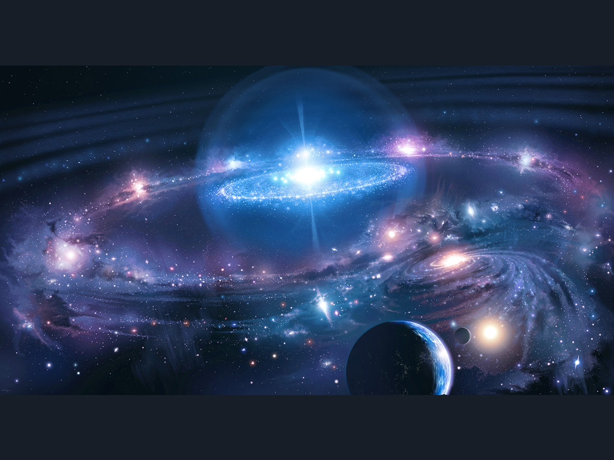
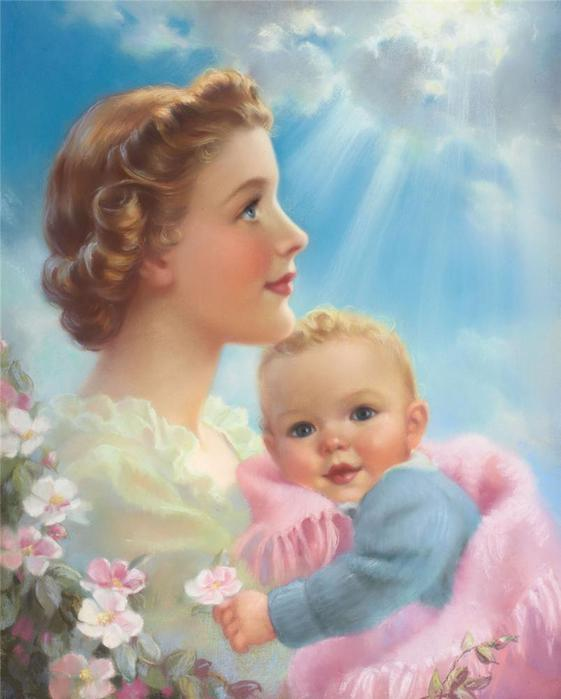

ЗАНОНЫ РИТА - Небесные Заповеди о чистоте Рода и Крови.
“Самое Великое Зло - это незнание и невежество”
Для создания полноценного потомства, необходимо обеспечить её полноценными генами. Каждый, кто знаком с вопросами наследственности, знает, что можно вывести растения или животных с любыми природными данными. Каждый, кто знаком с вопросами наследственности, знает, что можно вывести растения или животных с любыми природными данными. Отбором семян и выведением новых сортов можно достичь удивительных показателей: например, пшеницу можно вывести разного цвета, формы и качества. Можно увеличить её всхожесть, урожайность или размер зёрен. С каждым поколением укрепляется в ней именно то свойство, которое требуется. То же самое происходит и с животными при соответствующем подборе производителей. Можно вывести любую породу рогатого скота или лошадей. Стремясь к этому из поколения в поколение, можно окрасить породу животных в тот или иной цвет, уменьшить или увеличить рога, удлинить или укоротить ноги, морду сделать тупорылой или остроносой. Все знают, что самая паршивая борзая без труда обгоняет в беге собаку другой породы с выдающимися беговыми способностями, что наихудший рысистый конь всегда обгонит самую резвую рабочую лошадь, а у самой плохой легавой нюх будет всё же лучше, чем у дворняги.
Люди созданы из того же материла, что и все остальные живые существа, и к ним применимы те же законы наследственности, что и к животным. В них также при желании можно потомственно развить то или иное качество, ту или иную способность. Но все биологические виды, в том числе и все люди, генетически отличны друг от друга. Кроме того, все виды наследственно замкнуты по отношению друг к другу, то есть в естественных условиях межвидовые помеси либо невозможны, либо неплодны – как мул, либо неустойчивы при смене поколений – как ряд сортов культурных растений. Исчезновение генетически устойчивого ядра, за счёт которого происходит приспособление вида к медленно меняющимся условиям среды обитания, приводит к наследственному вырождению общества.
Основой противодействия такому процессу являются Родовые Знания о Законе Рита – Закон о чистоте Духа и Крови Славянских и Арийских народов.
О Законах РИТА, по которым жили с древних времён все Славянские и Арийские народы, в современном мире узнали в середине XIX века. Сейчас для обозначения Кононов РИТА используется греческое название – Телегония. Но ещё задолго до появления древних греков, ведали об этом явлении наши мудрые Предки. В медицине это называется “явлением первого самца”. Термин Телегония появился в прошлом веке, в переводе с греческого он означает передачу особых генных признаков какого-либо Рода из поколения в поколение и является образным, единственным параметром передачи наследственности.
Явление телегонии обнаружил в XIX веке в Англии, приятель Чарльза Дарвина, лорд Мортон, который под влиянием идеи своего друга тоже решил заняться биологией. Он скрестил чистокровную английскую кобылу с жеребцом – зеброй. Потомства не получилось, через некоторое время, когда он её же скрестил с английским жеребцом, кобыла принесла жеребёночка “англичанина”, с явными следами полос на крупе, как у зебры. Лорд Мартон назвал это явление – Телегонией.
Профессор Ледвитек подробно описал Телегонию в книге: “Индивид, эволюция, наследственность и неодарвинисты” (Москва, 1899). Двадцать четвёртая глава этого труда называется “Телегония или явление первого самца”. До 60-х годов XX в. учёными разных стран проведено множество исследований, в которых было установлено, что эффект Телегонии распространяется и на людей. Как только это стало научно установлено, все исследования и публикации по Телегонии были засекречены, а в обиходе Телегонию стали называть лженаукой.
До 1960–х годов, учёными разных стран проведено множество исследований, в которых было установлено, что явление телегонии распространяется и на людей. Оказалось, что наследуются не только внешние признаки первого полового партнёрства, но, и его болезни: венерические, психические, заболевания крови и т.д.
Незнание этого привело к низкой рождаемости, увеличилось количество заболеваний, появился СПИД. А такие страны как Америку и Англию к сексуальной революции, правильнее её назвать гомосексуальной революцией. Никто не задумывается, почему с 80-х годов в России не было переписи населения. Народ ужаснулся бы, если б узнал истинное положение дел по искусственному уничтожению русского народа. Если в начале 20-х годов белое население планеты составляло 20%, то на сегодняшний день это 8% от всего человечества. От шести миллиардов это очень и очень мало.
С этим явлением постоянно сталкиваются те, кто держит и разводит чистопородных голубей. Если сизарь “потоптал” чистопородную голубку, они её сразу убивают, потому что потом, даже при самом элитном “супружестве” у неё будут одни “чигражи”, т.е. нечистоплотные птенцы.
Любой собаковод знает, что если он не уследит за своей породистой сучкой и она первый раз погуляет с дворнягой, то породистых цинков от этой суки не дождётся никогда. Такая сука считается испорченной.
В Славяно – Арийских Ведах, и в любом религиозном учении мира, будь то Тора, Библия, Коран и др. есть упоминание о явлении телегонии, разве что само слово телегония в Священных текстах не используется. У евреев Закон гласит: “Еврей должен жениться только на еврейке”.
Вот, что гласят Славяно-Арийские Веды: “Не допускайте Чужеземцев к дочерям вашим, ибо совратят они дочерей ваших, и растлят Души их Чистые, и Кровь Расы Великой погубят, ибо первый мужчина у дщери оставляет Образы Духа и Крови…Чужеземные образы Крови из детей Человеческих Светлый Дух изгоняет, а смешение Крови приводит к погибели…, и сей Род, вырождаясь, погибает, не имея потомства здорового, ибо не будет той внутренней силы, что убивает все хвори-болезни…” (Саньтии Веды Перуна). Согласно данному Священному тексту, первый мужчина в жизни девственницы, оставляет свой Образ Духа и Крови – это психический и физический портрет детей, которых она родит. И только от этого мужчины зависит здоровье и полноценность будущего ребёнка.
Все последующие мужчины дают женщине лишь семя, но рожает она детей первого мужчины, давшего ей Образ Духа и Крови. Помимо семени, от последующих мужчин, женщина берёт и передаёт детям различные болезни, которые сжигают её изнутри, предварительно старят и убивают.
Первый мужчина, который нарушил девственность у девушки, и является единственным отцом всех детей, которых она родит в своей жизни, независимо от того, скольких мужчин она будет иметь за всю свою жизнь.
Доказательством “явления первого самца” служит показ телепередачи “Моя Семья”, которую, с нежным сочувствием смотрела вся Россия. Нам показали, как Славянская женщина первоначально жила с негром, а затем вышла замуж за Славянина и родила ему негритёночка. Они обратились на телевидение и это преподнесли как чудо. С точки зрения Законов РИТА объяснить этот факт довольно просто. Девушка до замужества в течение нескольких лет жила с любовником-негром. Негр был первым мужчиной в ее жизни. Он и оставил в ней свой Образ Духа и Крови. В этом случае муж девушки дал ей только своё семя для рождения ребёнка с Образом Духа и Крови любовника-негра. Таких детей называют «ублюдками». Ублюдок (выблюдок) – дитя блуда. Дитя от такого блуда влечёт за собой дурную наследственность. Не может определять добро и зло. Навязывает окружающим самый нелепый угол зрения на все стороны жизни. Прибегает к немереной лжи, которая вводит людей в заблуждение и уводит от естественных законов.
Этот приведённый случай показывает, что кто был первым мужчиной в жизни девушки. В Книге Мудрости Перуна сказано: “Не допускайте Чужеземцев к дочерям вашим, ибо совратят они дочерей ваших и растлят Души их чистые, и Кровь Рода погубят, ибо первый мужчина у дщери, оставляет Образы Духа и Крови” (Саньтия 8, шлока 11). Если первым мужчиной у девушки был негр, значит, рожать она будет в дальнейшей жизни только негритят, ибо на первом брачном ложе она получила Образы Крови и Сущности негра. Так определили Законы РИТА или как сейчас называют – Телегония, т.е. явление первого самца.
Законы РИТА запрещают межнациональные браки Славяно-Арийских народов с негроидными, монголоидными, европеоидными. Смешение Крови выше перечисленный народов между собой приводит к деградации, заболеванию крови (СПИД), вырождению всей ветви данного Рода.
Здоровая наследственность нашими Предками сохранялась благодаря девственной чистоте невесты, от «гулящей» девушки хорошего потомства не получишь.
Нравственно падшую девушку считали испорченной, не достойной замужества. Когда юноша брал в жёны “порченую” девушку, такое воссоединение называли “браком”, а не Семейным Союзом.
Это можно объяснить по-простому, без научной и богословской терминологии. Если рассмотреть на примере оптики и фотографии, как происходит передача Образа с объекта съемки на фотопластинку или фотопленку, а после на фотобумагу. Негатив получается в перевёрнутом виде и зародыш в утробе матери находится в перевёрнутом виде по отношению к Образу мужчины. А фотография это тоже своего рода механизированная передача Образа в соответствии с Законами РИТА. Сначала происходит передача Образа объекта на фотопленку или фотопластинку. Затем проявление и закрепление этого Образа на фотоносителе. Далее вновь при вставлении этой пленки или пластины в фотоаппарат и сколько бы далее ни снимать, изображение не изменится. Чтобы отпечатать фотографию, необходимо воспользоваться фотоувеличителем и фотобумагой. Делается проекция на фотобумагу, проявляется и закрепляется Образ на фотобумаге. А теперь представьте, что при печати фотографии используются негативы не одного изображенного лица, а нескольких, кто тогда получится? Получится неопределённый образ. Так и происходит сегодня в человеческом мире. Вся беда в том, что наша научная мысль не способна осознать, что биологическими процессами в организме управляет энергия Духа. Жизнь – это существование разных видов энергий. Мужчина, нарушающий девственность, не только передает Образы Духа и Крови своего Рода, но и во время полового контакта отдает женщине энергию одного года своей жизни. Энергия трех месяцев жизни мужчины уходит на проявление и закрепление его Образа Духа и Крови, а энергия девяти месяцев жизни - на вынашивание плода в утробе матери. Если беременность не наступила, то энергия 9 месяцев хранится до более благоприятного времени, когда произойдет зачатие. И если мужчина ведёт беспорядочную половую жизнь, то он растрачивает понапрасну свою Энергию Жизни, что приводит к преждевременному старению. Академик Павлов отмечал, что смерть человека до 150 лет следует считать насильственной.
Ведические знания определяют, что люди с разным цветом кожи имеют специфическую энергоновую структуру Крови, группу Крови, психоматрицу и т.п. Энергоновая система, это энерго-генетическая структура крови. Она зависит от состояния влияния энергетики космоса и целостности генного ядра.
Люди с чёрной кожей имеют 6-ти канальную энергоновую структуру Крови, разделённых на 3 мужских и 3 женских генетические единицы. Поэтому они могут обрабатывать 6 потоков информации. Генофонд передаётся по отцу.
Люди с красной кожей имеют 9-ти канальную энергоновую структуру Крови с 5-ю мужскими и 4-мя женскими генетическими единицами. Способны обрабатывать 9 потоков информации. Генофонд передаётся по отцу.
Серые имеют 10-ти канальную энергоновую структуру Крови (5 мужских и 5 женских). Способны обрабатывать одновременно 10 каналов информации. Генофонд передаётся по матери.
Люди с жёлтой кожей имеют 12-ти канальную энергоновую структуру Крови (6 мужских и 6 женских). Способны обрабатывать до12 каналов информации. Генофонд передаётся по отцу.
Человек с белой кожей имеет 16-ти энергоновую структуру Крови (8 мужских и 8 женских). Обрабатывает одновременно 16 каналов информации. Генофонд передаётся по отцу.
При смешивании чёрных и жёлтых народов появились индусы, которые имеют 9-ти энергоновую структуру Крови (3 женских и 6 мужских). Генофонд передаётся по отцу.
Иудеи получились от смешения белых и серых. Имеют 13-ти энергоновую структуру Крови (5 женских и 8 мужских). Генофонд передаётся по матери.
Человек белой кожи имеет свастичную психоматрицу: Совесть, Дух, Душа, Тело. Все остальные народы - только дуальную психоматрицу: Душа и Тело. Согласно Ведическим летописям генетический аппарат человека отвечает за Родовую память и физиологию, а энергоновая структура Крови отвечают за Дух и Душу.

При нарушении Законов РИТА происходит смешивание различной крови, что резко снижает защитные силы организма, наследующего смешанную кровь. Иммунная система перестаёт работать нормально и не защищает эффективно организм от инфекций и болезней. Всякие новомодные увлечения также нарушают Законы РИТА и ведут в конечном итоге к уничтожению Рода. Например, пластические операции меняют облик человека, а значит, меняют его настоящий Образ. Соответственно, меняется его энергетическая структура и человек становится постепенно другим относительно заданного при рождении Природой.
Древнеславянское имя Рита означает, что девочка рождена в соответствии с Небесными Законами о Чистоте Рода и Крови. Имя Маргарита гласит о том, что Чадо родилось с нарушением Законов РИТА. Марга - означает нарушение, уничтожение или изменение. В современных Загсах не регистрируют имя РИТА, а предлагают для регистрации имя Маргарита.
Также соединение Имени человека и Родового Имени (фамилии) отражается на его судьбе, характере, а также определяет образ мышления и поведения.
Законы РИТА запрещают браки между родственниками, даже если они находятся в дальнем родстве. Всякие браки между родственниками Славяно-Арийской Культуры, в каком бы родстве они ни были - запрещены. Бог Перун оставил нашим Предкам Свои Заповеди, одна из которых гласит: “Не берите в жены брат - сестру свою, а сын - мать свою, ибо Богов прогневаете, и кровь Рода загубите”. Кто же хочет, погубить кровь своего Рода, чтобы на нем закончилось нормальное, здоровое поколение? Но надо учитывать, что эта заповедь не относиться к другим народам. Другие народности имеют другую генную структуру и других Богов и другие заповеди. Надо спокойно понять, что другие народы Земли - в действительности, просто другие. То, что свойственно одним народам, губительно для других. То, что необходимо одним, никак не может использоваться другими.
Двадцатое столетие показало всем, как низко упала духовная культура многих народов. Устроенные сексуальные революции привели к тому, что сейчас существует. И для того, чтобы они успешно развивались, их возводят в государственный ранг, объявляют свободу отношений и сдабривают алкоголем и наркотиками. Основная цель заключается в том, чтобы опустить сознание людей до уровня инстинктов и тогда счастьем людей будет вызывание эмоций.
Сразу возник вопрос, а кто будет нести ответственность за детей, рождённых от смешанных браков? А эту как раз ответственность как всегда несут за детей - родители! Но исправлять детям… Но, своих родителей, независимо от вероисповедания, надо любить, уважать и почитать, независимо от того, какую они жизнь ведут, правильную или неправильную. Они дали тебе жизнь, ты обязан их уважать, почитать и содержать в старости. Они тебя родили, выкормили, одели, в люди вывели. Каких Богов они прославляют, это их дело. Для тебя они Боги-Творцы. Не обсуждать и не осуждать своих родителей.
Когда мужчина живёт с любимой и единственной супругой, потери энергии Жизни не происходит. Когда мужчина живёт со своей супругой, он ей отдаёт энергию одного года только один раз, только до тех пор, пока она не родит. Родила, он ей дальше отдаёт энергию девяти месяцев, для рождения следующего ребёнка, сколько бы они ни жили половой жизнью. После рождения второго, даёт энергию для третьего и т.д. Его образ уже зафиксирован в ней. Мужчина передаёт энергию, и женщина имеет определённый спектр. Он его передал. Триединство Духа, Души и Тела супруги не только получает энергию Жизни от своего мужа, но и открывает в нём связи с Космосом, откуда он и получает энергию Жизни, восстанавливая то, что передал жене, т.е. происходит постоянный взаимообмен энергий любви. Каждый мужчина должен знать только свою жену. Энергия, отданная мужчиной женщине активизирует определённые Силы, и женщина, излучая эту силу на мужчину, открывает в нём канал получения энергии от Рода. Не только мужчина даёт женщине, но и женщина даёт мужчине. Говорят, что мужчина делает девушку женщиной, а женщина делает юношу мужчиной. Всё взаимосвязано.
На мужчин также распространяются законы Рита и к нему тоже идут такие же требования, как и к женщине. Если мужчина ведет беспорядочную половую жизнь, то при половом контакте, он отдает каждой женщине энергию одного года своей жизни. А если мужчина изменяет супруге? В первую очередь, женщина должна винить не мужа, а себя. Что она не дала как женщина и что он ищет на стороне? Он побежал, а там что? Там образ Духа и Крови другого мужчины. Всё уже заполнено до предела. И когда мужчина приходит к другой женщине, он каждый раз будет отдавать энергию одного года жизни. Спектр другого мужчины есть, а он будет изливать свой спектр впустую. Он просто растрачивает свои: Мужскую Силу и Жизненную Энергию. Он в первую очередь обделяет себя, он лишает себя Жизни.
А вот если женщина сходила на сторону, то она приносит Чужеродный Образ, который наслаивается на уже существующий образ. Поэтому всегда было понятие женская измена, т.е. изменила Образ Духа и Крови, который ей дал муж, и получает заболевания от этого мужчины для будущего ребёнка.
Ведущие же беспорядочный, разгульный образ жизни женщина и мужчина, означает, что у них нарушена система отображения окружающего мира. Вместо сознательного продолжения своего Рода, разум у них зациклен на получении чувственных ощущений. Они получают болезни сердца, крови, душевные болезни, а, накапливая различные Образы своих партнёров, они губят первоначальный Образ будущего ребёнка. И в таких случаях у женщины при наслоении различных образов, изначальный образ первого мужчины размывается. Это приводит к рождению детей непохожих на своих родителей, а дети должны нести явные черты своих родителей.
Также на образ и психику будущего ребёнка, в значительной степени, влияют используемые женщиной различные приспособления, заменяющие мужские половые органы и использование презервативов. Это не снимает всех проявлений телегонии. А только это приводит к рождению ещё большего количества неполноценных детей.
Когда Телегония изучалась в закрытых институтах России и даже проводились эксперименты. То на них было написано: “Проверено электроникой”. Зачем резинку проверять электроникой? Понятно, зачем проверяют целостность резинки, а зачем проверять электроникой. Электроникой проверяли, какой спектр пропускает резинка, а какой нет. Для чего? Они были разного цвета: синий, розовый, зелёный. Каждый из них пропускал и задерживал определённый спектр энергии.
Продавали, сопоставляли количество проданных презервативов с количеством рождённых неполноценных детей. Это есть генетический эксперимент на народе.
Для растления молодёжи под названием «планировании Семьи» на уроках раздают презервативы детям, противозачаточные средства, рассказывают о безопасном сексе! Учат детей, как защититься от нежелательной беременности. Но беременность всегда считалась по Законам Рита желательной. Это время рассвета женского организма, когда он преображается.
Самое страшное, что в школах девственниц воспринимают как «белых ворон». Девочки обсуждают, сколько сменили партнёров за лето. Кому не хватает своих мозгов, пользуются чужими и идут по проторенной дорожке своих подруг.
Сейчас порушены все нравственные и моральные устои. У 90% американцев смешанные браки с заболеваниями крови. В фильме “Элен и ребята” менять половых партнёров в порядке вещей, даже не обращают внимания, какого пола партнёр. Сегодня с девочкой, а завтра с мальчиком. Девочки меняют мальчиков на девочек. Для них это нормально, как норма жизни. Для Славяно-Арийских Родов это не приемлемо! Нормой становится в отдельных европейских церквях венчать гомосексуалистов. Это всё противоестественно.
Раньше наказывали за такое поведение. В России гомосексуалистов отправляли на каторгу, и они были оторваны от общества. А во времена Ивана Грозного их сажали на кол, отправляли на каторгу или выгоняли вон из Державы. До Октябрьской революции 1917 года было уголовное наказание за преступление против нравственности. В школах учат, что первым указом большевиков были Декрет о Мире и Земле. На самом деле первый Указ был об отмене уголовного наказания за преступление против нравственности, т.е. отмена уголовного наказания за гомосексуализм. Потому, что 99% пламенных революционеров были гомосексуалисты. И только при Сталине вновь опять ввели уголовное наказание за гомосексуализм.